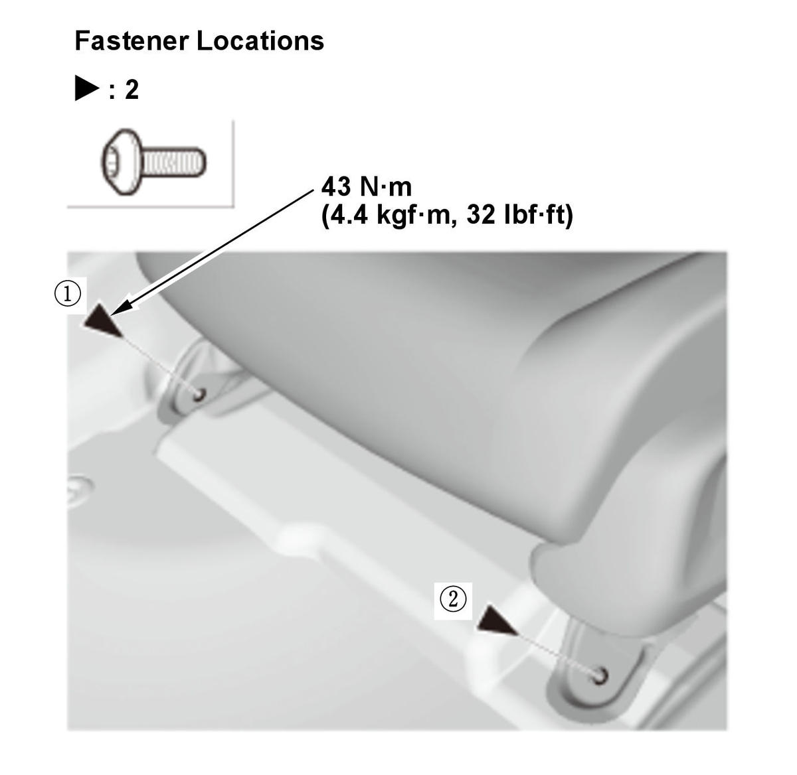
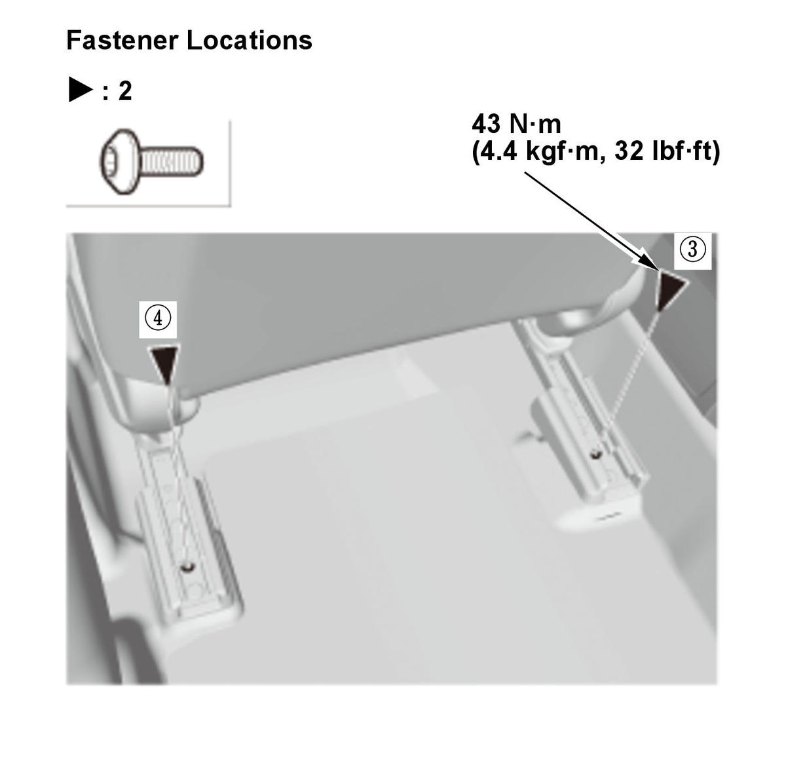

Removal and Installation
NOTE: SRS components are located in this area. Review the SRS component locations and the precautions and procedures before doing repairs or service.
- 12 Volt Battery Terminal - Disconnect
NOTE: Wait at least 3 minutes before starting work.
- Front Seat Rear Inner Foot Cover - Remove (Passenger's Seat)
- Front Seat Mounting Bolts - Remove
Rear side
Front side
- Front Seat - Remove
1. Lift up the front seat, then disconnect the connectors (A) and remove the harness clips (B). 2. Remove the head restraint.
3. With the help of an assistant, carefully remove the front seat (A) through the front door opening.
- All Removed Parts - Install

Courtesy of HONDA, U.S.A., INC.
Courtesy of HONDA, U.S.A., INC.1. Install the parts in the reverse order of removal.
NOTE: Tighten the bolts by hand first, then tighten them to the specified torque in the sequence shown. - Front Passenger's Weight Sensor - Operation Check